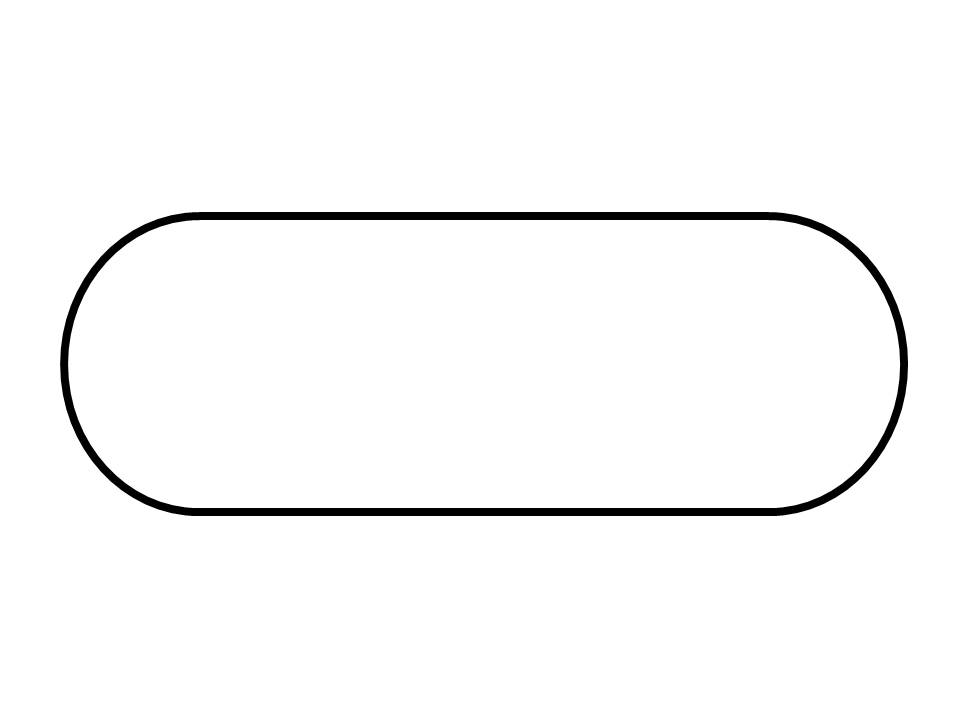
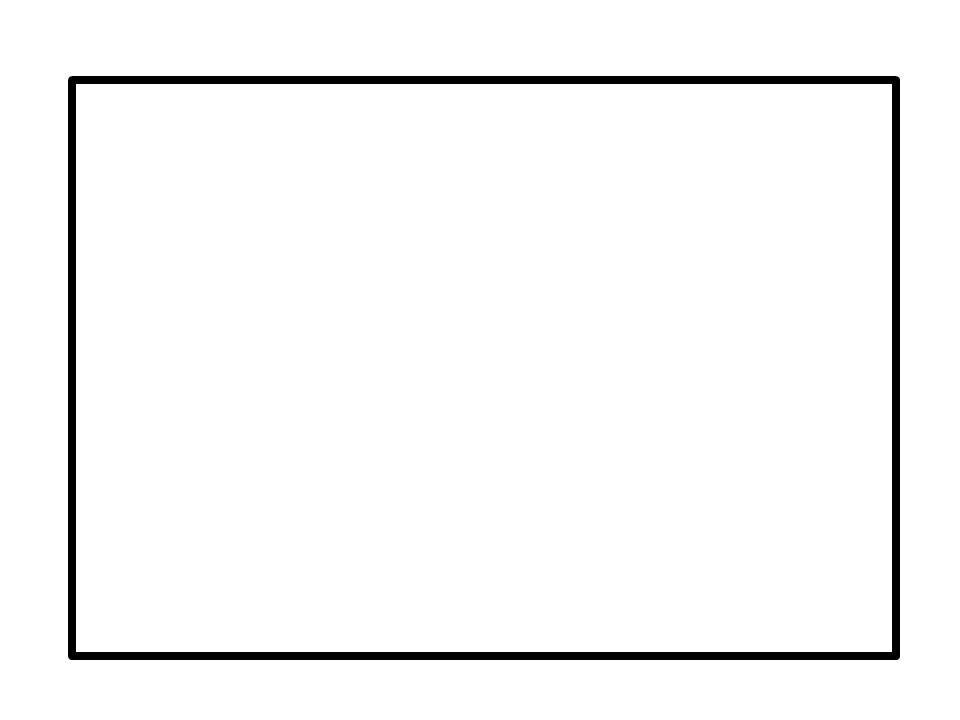
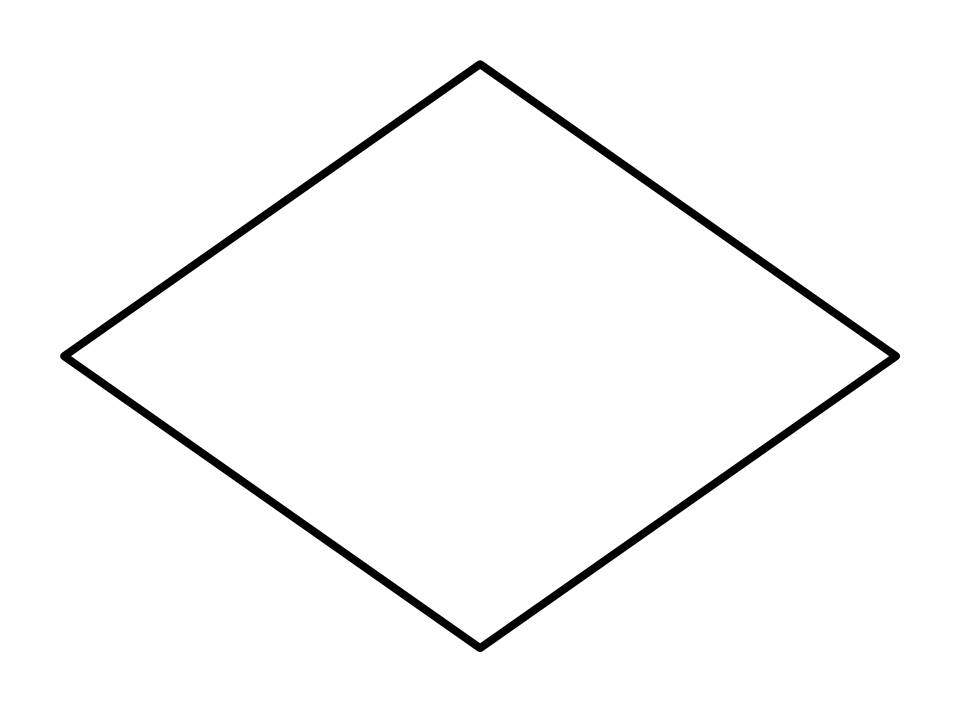
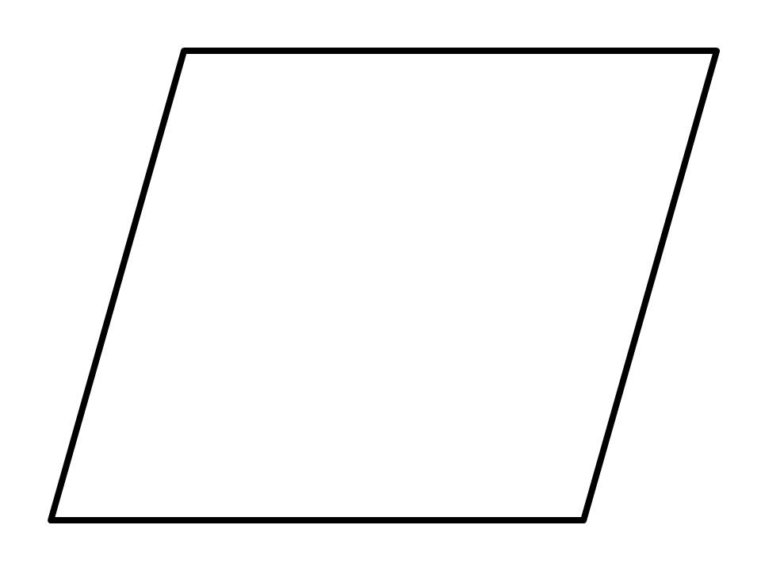
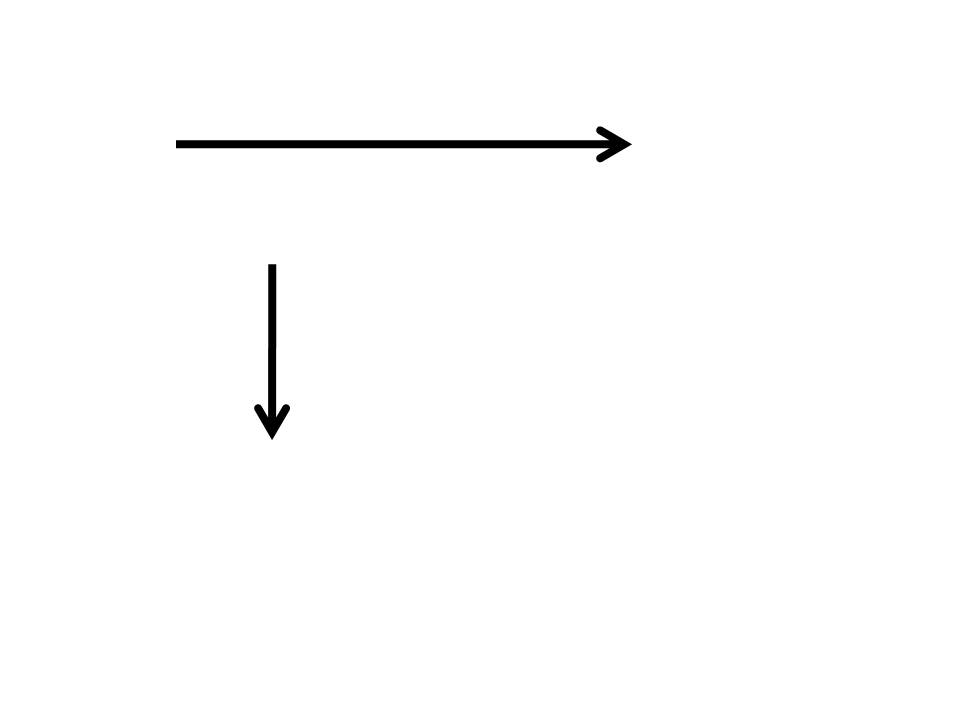
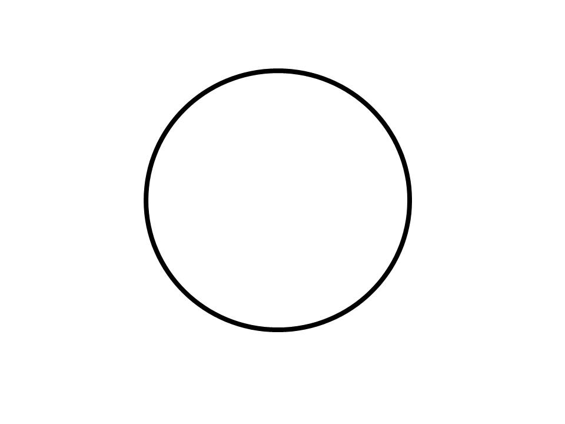
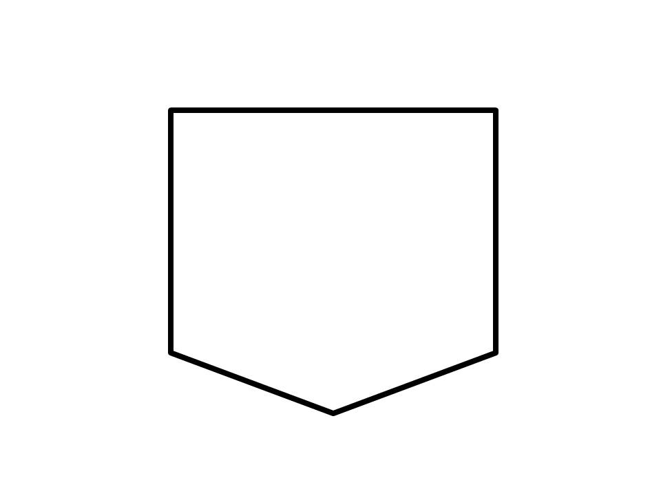

สัญลักษณ์ของผังงาน
(FlowCart Symbol)
| ภาพสัญลักษณ์ | ชื่อ | ความหมาย |
|---|---|---|
|  | Terminator | จุดเริ่มต้นและจุดสิ้นสุดของการทำงาน ( มีคำว่า start หรือ stop กำกับ ) |
|  | Process | การประมวลผล หรือ คำนวณ |
|  | Decision | เงื่อนไขต่างๆ ( มี 2 เส้นทาง คือ เป็นจริง กับเป็นเท็จ ) |
|  | Data | การรับหรือแสดงข้อมูล |
|  | Arrow | ลูกศรแสดงทิศทางการทำงาน |
|  | Connector | จุดเชื่อต่อผังงาน ( เชื่อมลูกศรที่กระจัดกระจายให้รวมเป็นจุดเดียว ) |
|  | Off-page reference | จุดเชื่อมต่อระหว่างหน้า ( เมื่อจบหน้ากระดาษ จะมีตัวเลขกำกับบ่งบอกจุดเชื่อมต่อ ) |